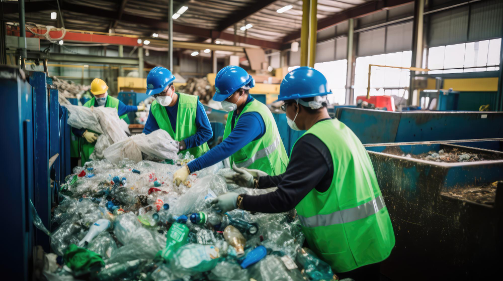

PÁTIO LIMPO
SEM ATRASOS
Nossa frota vai até sua empresa no dia e horário combinados. Liberamos seu espaço imediatamente.

Sua operação não pode parar por falta de espaço ou atraso no recolhimento. A JM Reciclagem retira grandes volumes com agilidade, paga o valor justo pelo seu material e entrega toda a documentação legal sem complicação.
SOLICITAR COLETA OU COTAÇÃONossa frota vai até sua empresa no dia e horário combinados. Liberamos seu espaço imediatamente.
Pesagem exata e avaliação honesta do seu papelão, plástico ou sucata.
Emitimos o Certificado de Destinação Final (CDF) e as notas fiscais para sua empresa não ter problemas com fiscalização.
Sua empresa merece atendimento corporativo: operação formalizada em contrato, processos transparentes e canal direto de suporte.
Atendemos supermercados, centros de distribuição e escritórios que acumulam grandes volumes de embalagens e aparas.
Retiramos o material diretamente no seu pátio para manter suas docas e estoques sempre livres.
Solução prática para indústrias e comércios que precisam descartar sobras de processos fabris ou embalagens de proteção.
Garantimos pesagem exata no local e destinação correta do material.
Atendimento preparado para indústrias, metalúrgicas e obras com acúmulo de material pesado.
Enviamos o caminhão e os equipamentos certos para fazer a retirada de forma rápida e segura.
A JM Reciclagem é parceira estratégica de indústrias, supermercados, centros logísticos e empresas que buscam soluções eficientes, seguras e sustentáveis para a destinação final de resíduos recicláveis.
Oferecemos coleta, triagem e destinação adequada para papéis, papelão, plásticos, metais e outros materiais recicláveis gerados em grande escala, ajudando sua empresa a manter a conformidade ambiental, otimizar custos operacionais e fortalecer sua agenda ESG.

Estamos prontos para atender sua empresa com agilidade e segurança.
R. Padre Paraíso, 181 - Carlos Prates, Belo Horizonte - MG, 30710-030
Segunda a sexta
08:00 às 18:00
Coleta de materiais recicláveis para empresas e grandes volumes.